Гладкий Максим Валерьевич / github:MaksHladki
jQuery — библиотека JavaScript, фокусирующаяся на взаимодействии JavaScript и HTML. Библиотека jQuery помогает легко получать доступ к любому элементу DOM, обращаться к атрибутам и содержимому элементов DOM, манипулировать ими. Также библиотека jQuery предоставляет удобный API для работы с AJAX
Desktop
Mobile
Удалено:
<!DOCTYPE html>
<html>
<head>
<title>jQuery Hello World</title>
</head>
<body>
<script src="jquery-3.1.1.min.js"></script>
</body>
</html>
Использование CDN
<script src="https://code.jquery.com/jquery-3.1.1.min.js"></script>
jQuery(document).ready(function(){
// code
});
$(document).ready(function(){
// code
});
$(function(){
// code
});
| Шаблон | Описание | Пример |
|---|---|---|
| $('*') | выборка всех элементов страницы | $('*').css('color', 'red') |
| $('element') | выборка всех элементов с данным именем тега | $('img') |
| $('#id') | выборка элемента с данным значением атрибута id | ('#btn1') |
| $('.class') | выборка всех элементов с данным значением атрибута class | $('.btn') |
| $('selector1, selector2') | выборка всех элементов, соответствующих указанным селекторам | $('body, .btn') |
| Шаблон | Описание | Пример |
|---|---|---|
| $(selector1 > selector2) | выборка элементов, которые соответствуют второму селектору и являются дочерними для элементов первого | $('#menu > a') |
| $(selector1 + selector2) | выборка элементов со вторым селектором, которые располагаются непосредственно за элементами первого | $('.closed + .open') |
| $(selector1 ~ selector2) | выборка элементов со вторым селектором, которые располагаются на одном уровне с элементами первого | $('.closed ~ .open') |
| Шаблон | Описание | Пример |
|---|---|---|
| [attr] | выборка элементов с атрибутом attr | $("a[class]") |
| [attr='value'] | выборка элементов, у которых значение attr равно value | $("a[class='redStyle']") |
| [attr^='value'] | выборка элементов, у которых значение attr начинается со строки value | $("a[class^='red']") |
| [attr$='value'] | выборка элементов, у которых значение attr оканчивается на строку value | $("a[class$='Style']") |
| [attr~='value'] | выборка элементов, у которых attr имеет список значений, разделенных пробелом, и одно из этих значений равно value | $("a[class~='redStyle']") |
| [attr *= 'value'] | выборка элементов, у которых значение атрибута attr имеет подстроку value | $("a[class *= 'Style']") |
| [attr|='value'] | выборка элементов, у которых значение атрибута attr представляет либо значение value, либо список значений, разделенных дефисами, и первое значение в этом списке равно value | $("a[class|='red']") |
| Фильтр | Описание |
|---|---|
| :eq(n) | выбирает n-й элемент выборки |
| :even | выбирает элементы с четными номерами |
| :odd | выбирает элементы с нечетными номерами |
| :first | выбирает первый элемент выборки |
| :last | выбирает последний элемент выборки |
| :gt(n) | выбирает все элементы с номером, большим n |
| :lt(n) | выбирает все элементы с номером, меньшим n |
| :header | выбирает все заголовки (h1, h2...) |
| :not(селектор) | выбирает все элементы, которые не соответствуют селектору |
| Фильтр | Описание |
|---|---|
| :contains('text') | получает все элементы, которые содержат текст text.. |
| :has('селектор') | получает все элементы, которые содержат хотя бы один дочерний элемент, соответствующий селектору |
| :empty | получает все элементы, которые не имеют дочерних элементов |
| :first-child | получает все элементы, которые являются первыми дочерними элементами в своих родителях |
| :last-child | получает все элементы, которые являются последними дочерними элементами в своих родителях |
| :nth-child(n) | получает все элементы, которые являются n-ными элементами в своих родителях (нумерация идет с единицы) |
| :nth-child(even) | получает все элементы, которые являются четными элементами в своих родителях (нумерация идет с единицы) |
| :nth-child(odd) | получает все элементы, которые являются нечетными элементами в своих родителях (нумерация идет с единицы) |
| :only-child | получает все элементы, которые являются единственными дочерними элементами в своих родителях |
| :parent | получает все элементы, которые имеют, как минимум, один дочерний элемент |
| Фильтр | Описание |
|---|---|
| :button | получает все элементы button и элементы input с типом button |
| :checkbox | получает все элементы checkbox |
| :checked | получает все отмеченные элементы checkbox и radio |
| :disabled | получает все элементы, которые находятся в неактивном состоянии |
| :enabled | получает все элементы, которые находятся в активном состоянии |
| :file | получает все элементы file |
| :input | получает все элементы input |
| :hidden | получает все скрытые элементы |
| :password | получает все элементы password |
| :radio | получает все элементы radio |
| :reset | получает все элементы reset |
| :selected | получает все отмеченные элементы option |
| :submit | получает все элементы input с типом submit |
| :text | получает все элементы input с типом text |
| :visible | получает только видимые элементы |
| find(селектор) | поиск в выборке объектов, соответствующих селектору |
| find(элемент) | поиск в выборке объектов, соответствующих данному элементу html |
| find(jQuery) | поиск в выборке объектов, соответствующих объекту jQuery |
| children([selector]) | возвращает набор элементов, состоящий из прямых потомков каждого элемента исходного набора |
| closest(selector[,context]) | возвращает ближайшего родителя, соответствующему селектору |
| next([selector]) | получает следующий элемент, находящийся на одном уровне с текущим |
| nextAll([selector]) | получает все следующие элементы одного уровня по отношению к текущему |
| prev([selector]) | получает предыдущий элемент по отношению к текущему |
| prevAll([selector]) | получает все предыдущие элементы по отношению к текущему |
| siblings([selector]) | позволяет получить все элементы уровня, на котором находится текущий (комбинация nextAll и prevAll) |
| parent([selector]) | получение родителя элемента |
<!DOCTYPE>
<html>
<head>
<title>Jquery</title>
</head>
<body>
<section id="news" class="news">
<div id="article_main" class="article" data-article-id="47">
<div class="header">
<p>article #2</p>
</div>
<div class="body">
<p>Hello</p>
</div>
</div>
<div class="article" data-article-id="101">
<div class="header">
<p>article #2</p>
</div>
<div class="body">
<p>Hey</p>
</div>
</div>
</section>
<script src="jquery-3.1.1.min.js"></script>
</body>
</html>
$(function () {
var newsElement = $('#news');
console.log(newsElement);
});
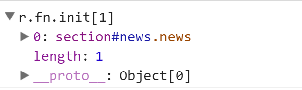
$(function () {
var newsElement = $('.news');
console.log(newsElement);
});
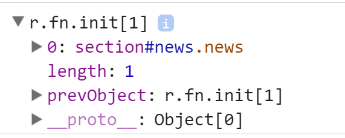
$(function () {
var headers = $('.header');
console.log(headers);
for(let header of headers){
console.log(header);
}
});
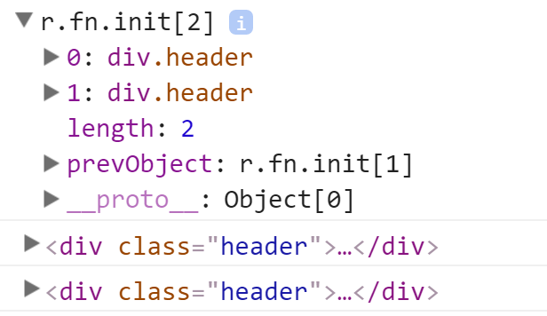
$(function () {
var headers = $('#article_main .header');
console.log(headers);
$.each(headers, (index, value) => {
console.log(value);
});
});
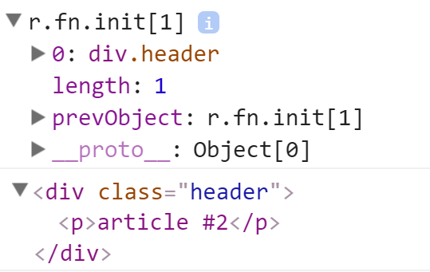
$(function () {
var articles = $('#news > .article');
console.log(articles);
});
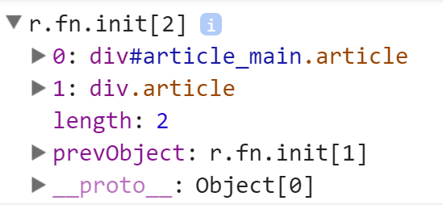
$(function () {
var headers = $('#news > .header');
console.log(headers);
});
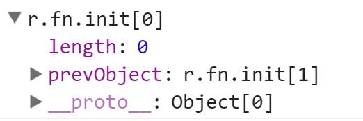
$(function () {
var elements = $('div[class*="eade"]');
console.log(elements);
});
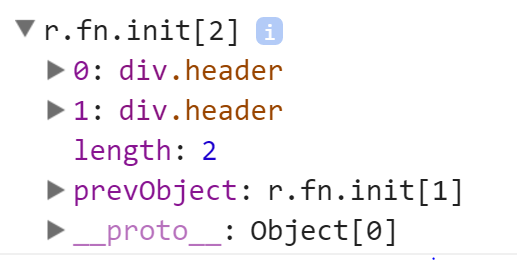
$(function () {
var article = $('*[data-article-id="101"]');
console.log(article);
var articleId = article.data("article-id");
console.log(articleId);
});
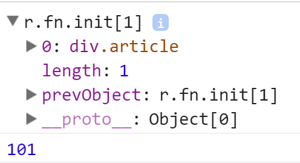
$(function () {
var article = $('.article:eq(1)');
console.log(article);
});
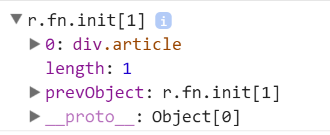
$(function () {
var articles = $('.article:not(#article_main)');
console.log(articles);
});
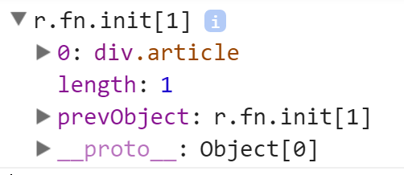
$(function () {
var body = $('.body:last');
console.log(body);
});
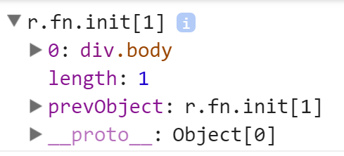
$(function () {
var body = $('.article .body>p:contains("Hey")').parent()[0];
console.log(body);
});
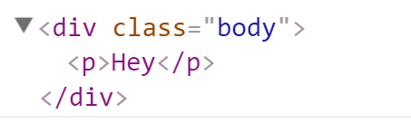
$(function () {
var articles = $('div').filter(function(){
return $(this).hasClass('article');
});
console.log(articles);
});
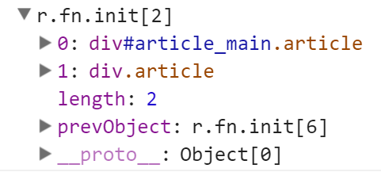
$(function () {
var articles = $('.article');
var headers = articles.find('.header');
console.log(headers);
});
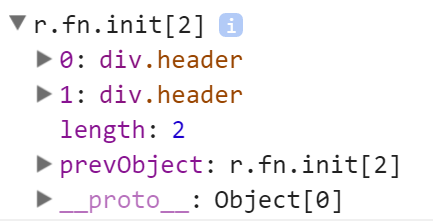
$(function () {
var article = $('#article_main');
console.log(article.children());
});
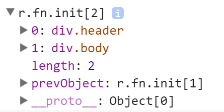
$(function () {
var article = $('#article_main');
console.log(article.children('.body'));
});
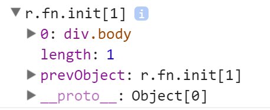
$(function () {
var pharagraps = $('.header > p');
console.log(pharagraps.closest('.news'));
});
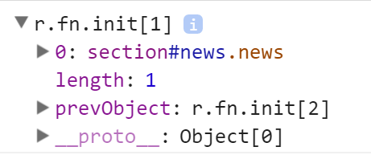
$(function () {
var mainArticle = $('#article_main');
console.log(mainArticle.next()[0]);
});
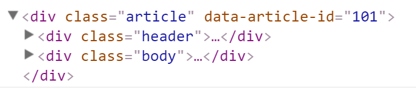
$(function () {
var mainArticle = $('#article_main');
var secondArticle = $('.article[data-article-id="101"]');
console.log(secondArticle);
console.log(mainArticle.siblings(secondArticle)[0]);
});
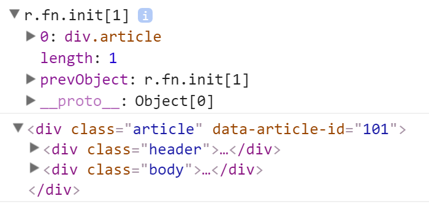
$(function () {
var mainArticle = $('#article_main');
//нет родителя с тегом body
console.log(mainArticle.parent('body'));
console.log(mainArticle.parent());
});
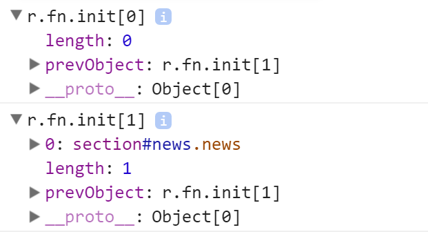